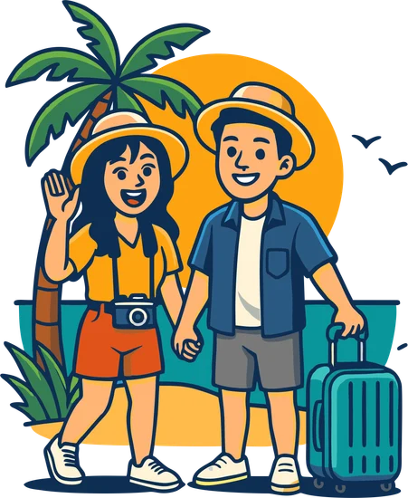
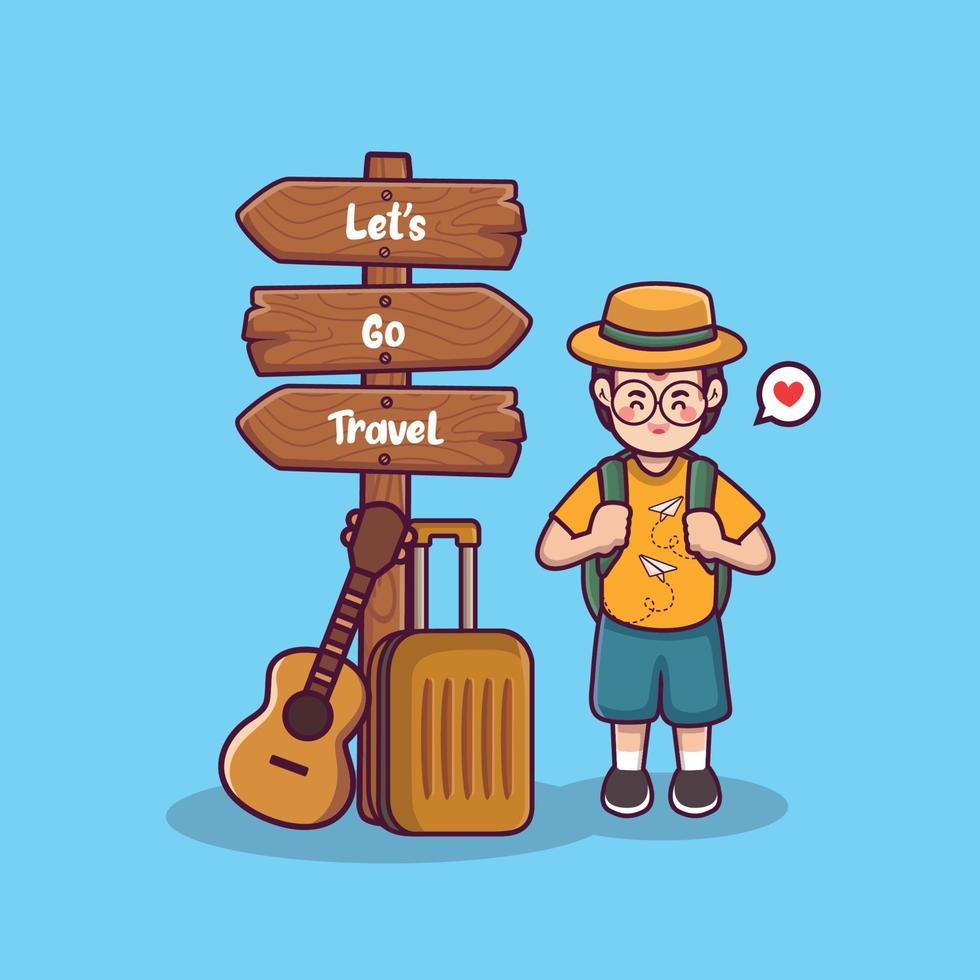
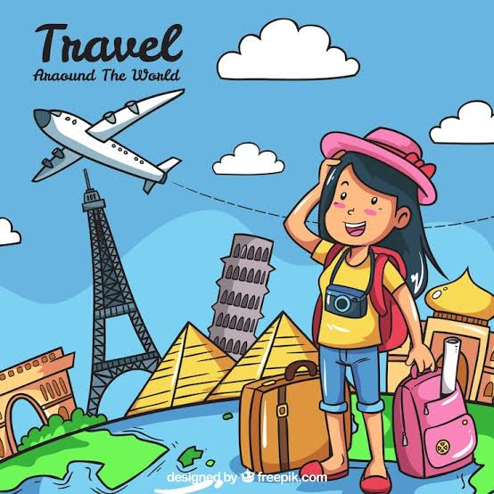

Bienvenido a nuestra Agencia
Julian D Salazar A / Tu Guia de Confianza
 |
|---|
Plan en Pareja: Aventura Urbana y Conexión |
 |
|---|
>Planes individualesEnfoque: Aventura, autonomía y flexibilidad para descubrir el mundo a tu propio ritmo. |
Gran Tour Mundial
 |
Tour Transcontinental: Cultura, Historia y Modernidad
|
| ¡Reserva ya! |